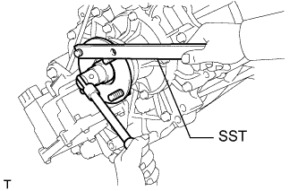
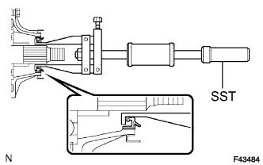
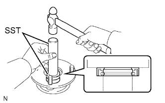
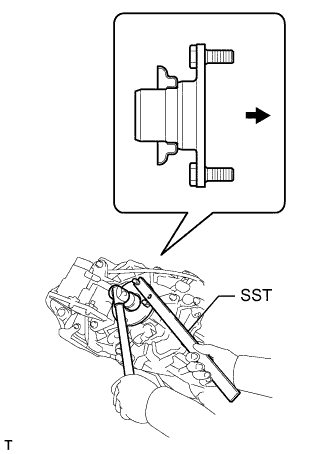

ЗАДНИЙ САЛЬНИК КАРТЕРА РАЗДАТОЧНОЙ КОРОБКИ > ЗАМЕНА |
| 1. СЛЕЙТЕ МАСЛО ИЗ РАЗДАТОЧНОЙ КОРОБКИ |
 |
Снимите пробку наливной горловины и прокладку.
Снимите пробку сливного отверстия и прокладку, а затем слейте масло раздаточной коробки.
| 2. СНИМИТЕ ЗАДНИЙ КАРДАННЫЙ ВАЛ В СБОРЕ |
Снимите задний карданный вал (Нажмите здесь).
| 3. ПОДСОЕДИНИТЕ СОЕДИНИТЕЛЬНЫЙ ФЛАНЕЦ ЗАДНЕГО ВЫХОДНОГО ВАЛА В СБОРЕ |
С помощью зубила и молотка ослабьте накерненную часть контргайки.
|  |
Удерживая соединительный фланец с помощью SST, отверните контргайку.
 |
С помощью SST снимите соединительный фланец.
| 4. СНИМИТЕ САЛЬНИК ЗАДНЕГО СОЕДИНИТЕЛЬНОГО ФЛАНЦА ВЫХОДНОГО ВАЛА РАЗДАТОЧНОЙ КОРОБКИ |
С помощью отвертки и молотка выбейте сальник из соединительного фланца.
| 5. СНИМИТЕ ЗАДНИЙ САЛЬНИК КАРТЕРА РАЗДАТОЧНОЙ КОРОБКИ |
|  |
С помощью SST выбейте сальник.
| 6. УСТАНОВИТЕ ЗАДНИЙ САЛЬНИК КАРТЕРА РАЗДАТОЧНОЙ КОРОБКИ |
 |
Покройте кромку нового сальника универсальной консистентной смазкой.
С помощью SST и молотка запрессуйте сальник так, чтобы его поверхность оказалась заподлицо с верхней поверхностью картера.
| 7. УСТАНОВИТЕ САЛЬНИК ЗАДНЕГО СОЕДИНИТЕЛЬНОГО ФЛАНЦА ВЫХОДНОГО ВАЛА РАЗДАТОЧНОЙ КОРОБКИ |
|  |
С помощью SST и молотка установите новый сальник.
Покройте кромку сальника универсальной консистентной смазкой.
| 8. УСТАНОВИТЕ СОЕДИНИТЕЛЬНЫЙ ФЛАНЕЦ ЗАДНЕГО ВЫХОДНОГО ВАЛА В СБОРЕ |
|  |
Нанесите трансмиссионное масло на контактные поверхности соединительного фланца и выходного вала.
Установите соединительный фланец на выходной вал.
 | Задняя сторона |
Удерживая соединительный фланец с помощью SST, заверните новую контргайку.
 |
Накерните контргайку с помощью молотка и зубила.
| *a | Правильно |
| *b | Неправильно |
| 9. УСТАНОВИТЕ КАРДАННЫЙ ВАЛ В СБОРЕ |
Установите задний карданный вал (Нажмите здесь).
| 10. ДОБАВЬТЕ МАСЛО В РАЗДАТОЧНУЮ КОРОБКУ |
Снимите пробку наливной горловины и прокладку.
Добавьте столько масла, сколько необходимо, чтобы уровень масла был на 0-5,0 мм (0-0,196 дюйма) ниже нижней кромки наливного отверстия.
Подождите примерно 5 минут и проверьте, не изменится ли уровень масла.
Установите новую прокладку на пробку наливного отверстия, а затем затяните пробку.
| 11. ПРОВЕРЬТЕ, НЕТ ЛИ УТЕЧЕК МАСЛА РАЗДАТОЧНОЙ КОРОБКИ |